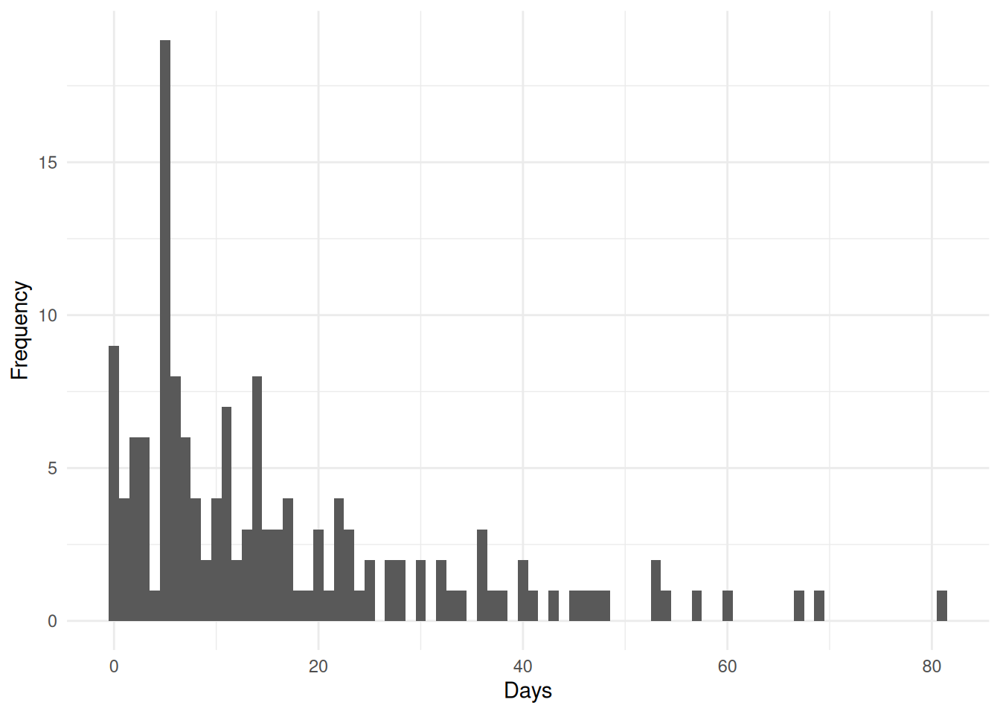

Statistical Models
$$ % Basic sets/Variables
% Probability and statistics % % Linear algebra % Math functions % Distributions% Update symbols $$
This part will dive deeper into some of the models used in statistics, which do not naturally fit into one of the other chapters.
Covariates
Covariates are the explanatory variables used to predict or explain the response variable in a statistical model. They represent the factors that may influence the outcome of interest. Covariates can be broadly classified into two main types based on their nature, described in the following subsections.
Discrete/categorical variables
Discrete/categorical covariates take on a limited set of distinct values, representing different categories or groups. Examples include age groups (\(\geq 75\), \(75>x\geq 50\), \(50>\)), gender (male, female), or country of origin. In statistical models, categorical variables are typically encoded using indicator/dummy variables, where each level of the variable, except a reference level, gets its own binary variable taking the value 0 or 1.
Stratification variables
Stratification variables are categorical covariates used to divide a population into distinct, non-overlapping subgroups (strata) based on characteristics that may influence the relationship between other covariates and the response variable. Unlike regular categorical covariates that are included as terms in a model, stratification involves fitting separate models or allowing different baseline functions within each stratum.
In practice, stratification variables define groups within which the analysis is performed separately. For example, stratifying by center in a multi-center clinical trial allows each center to have its own baseline response level while estimating common treatment effects across centers. This approach provides more flexibility than simply including the stratification variable as a fixed effect, particularly when the variable has many levels or when assumptions about its relationship with the response variable are questionable.
Continuous variables
Continuous covariates can take any value within a range and typically represent quantitative measurements. Examples include age, weight, or temperature. Continuous covariates are often included directly in models, though they may sometimes be transformed to better satisfy model assumptions or describe non-linear relationships with the response variable.
Fixed Effects
Fixed effects describe the average relationship between covariates and the response variable - the systematic effects within a group. In the context of linear models (see 5 Linear Regression), fixed effects are the coefficients that quantify how the expected value of the response variable changes with the covariates. These effects are “fixed” in the sense that they are constant across all observations in the population, though they may vary across different levels of categorical covariates.
As an example, consider the height of a group of 20 year old males. For examples sake, the only difference between these males is there height when they were 10 years old. In this example, the fixed effects would capture the systemic growth pattern shared by all 20 year old males in the population. This includes the average height at age 10 (fixed intercept) and the average rate of growth over the 10-year period (fixed slope). These parameters describe the general trajectory that applies to the entire group, before considering individual variations.
Random Effects
As opposed to the fixed effects, which describe a group effects, the random effects are able to describe individual devations, such as if an individual generally has larger values (random intercept), or has a tendency to evolve/progress differently than the whole group (random slope).
Continuing with the height example described in the fixed effects section, there should be some form of correlation between an individual’s height at age 10 and then at age 20. If one were to try and model this under a linear assumption, one approach might be to model them individually, but with this approach information about the systemic growth would be lost. Another approach would be to try and model the systemic growth, but then their individual characteristics would be lost. Instead, one should use a linear mixed model (see 6 Linear Mixed Model) which both derives the systemic growth (fixed effects) and their individual characterstics (random effects). Adding a random intercept would, as the name suggests, allow each male to have their own intercept. Adding a random slope, would allow each male have a larger or lower slope, when looking at how their height has increased in the 10 years - allowing some to grow faster/slower than the systemic growth, and capturing this effect.
Repeated measures
Repeated measures data arise when the same individuals or units are observed multiple times under different conditions or at different time points. This design is common in longitudinal studies, clinical trials with multiple follow-up visits, and experiments where each subject serves as their own control. An example of this is measuring blood pressure at baseline, week 4, and week 8 in a clinical trial. Intuitively, the observations from the same individual are typically correlated - they tend to be more similar, when compared to observations from other individuals. This correlation violates the independence assumption of other statistical methods such as linear regression (see 5 Linear Regression). Ignoring this correlation can lead to incorrect standard errors, confidence intervals, and hypothesis tests. The correlation structure often depends on factors such as the time between measurements, with observations closer in time generally being more strongly correlated.
Specialised statistical methods are required to properly analyse repeated measures data. Linear mixed models (see 6 Linear Mixed Model) and non-linear mixed models (see 7 Non-linear mixed models) are particularly well-suited for this purpose as they can account for both fixed effects and random effects. The choice of covariance structure (see 3 Covariance Structures) is crucial for these models, as different structures make different assumptions about how observations within an individual are correlated.
Count data
Count data represent the number of occurenses within an observation period or similarly. Unlike continuous measurements, count data consist of non-negative integers (\(0, 1, 2, \dots\)) and thus cannot take fractional values. Examples include the number of hospital admissions per month, or the number of fish observed in a given lake.
Count data often exhibit characteristics that violate the assumptions of linear regression (see 5 Linear Regression). The distribution of counts is typically right-skewed (E.g. Figure 1), particularly when the mean count is small, and the variance often increases with the mean. Additionally, the discrete nature of count data means that predictions from linear regression could inappropriately produce negative values. For these reasons, specialized models such as Poisson regression (see ?sec-Poisson_Regression) and negative binomial regression (see ?sec-Negative_Binomial_Regression) are used to model count data. These models ensure that predicted values are non-negative and properly account for the distributional characteristics of count outcomes.
Incidence rates
While the above-mentioned models directly analyze the number of event occurences, the same statistical framework can be extended to model incidence rates, which express the frequency of events relative to the amount of exposure or time at risk. Incidence rates are particularly useful when individuals or units have different observation periods or when the goal is to compare event frequencies across groups with varying exposure times.
An incidence rate is calculated as the number of events divided by the total person-time at risk, often expressed per standard time unit (e.g., events per 100 person-years). In the context of the above-mentioned models, incidence rates are incorporated using an offset term - a covariate with a coefficient fixed at 1, typically on the log scale. The offset accounts for varying exposure times, effectively shifting the model from predicting event counts to predicting event rates. For instance, in Poisson regression with an offset for \(\operatorname{log}\left(t_i\right)\), the model estimates the rate of events per unit of exposure, adjusting for the fact that some individuals (\(i\)) may have been observed for longer periods than others. This approach allows for valid comparisons of event rates across different exposure periods while maintaining the computational and inferential framework of the above-mentioned models.
Incidence Rate Ratio (IRR)
The incidence rate ratio (IRR) is a measure of association used in the context of count data models, particularly when modeling incidence rates. The IRR quantifies the relative change in the incidence rate of an event associated with a one-unit change in a covariate, holding other variables constant. It is calculated as the exponentiated coefficient from a regression model that includes the covariate of interest. It shares some similarities with the hazard ratio (see ?sec-Hazard_Ratio) used in survival analysis, as both are derived from exponentiated coefficients and represent relative changes in rates. However, while the hazard ratio pertains to the instantaneous risk of an event occurring at a specific time point, the IRR pertains to the overall rate of events over a specified period. Both measures are multiplicative and can be interpreted in terms of percentage increases or decreases in risk/rate, but they apply to different types of data and models. The interpretation of the IRR is as follows:
- \(\text{IRR} = 1\) indicates no association (no difference in incidence rates)
- \(\text{IRR} > 1\) indicates increased incidence rate in the comparison group
- \(0 < \text{IRR} < 1\) indicates decreased incidence rate in the comparison group
Model Selection Criteria
When comparing statistical models for the same data, an objective criterion is needed to determine which model provides the best balance between goodness of fit and model complexity. Simply choosing the model with the lowest residual error or highest likelihood would always favor more complex models with more parameters, leading to overfitting. Model selection criteria address this by penalizing model complexity, thereby encouraging parsimonious models that generalize well to new data.
The two most widely used information criteria are the Akaike Information Criterion (AIC) and the Bayesian Information Criterion (BIC). Both criteria are derived from different theoretical frameworks but share the common goal of balancing model fit with simplicity.
Akaike Information Criterion
The Akaike Information Criterion is based on information theory and estimates the relative quality of statistical models. For a given dataset, AIC estimates the information lost when a particular model is used to approximate the true data-generating process. The model with the lowest AIC is preferred as it represents the best approximation with the least information loss. AIC is defined as: \[ \text{AIC} = -2\operatorname{log}\left(\mathcal{L}\right) + 2k \] where \(\mathcal{L}\) is the maximized likelihood of the model and \(k\) is the number of estimated parameters. The first term measures how well the model fits the data (lower values indicate better fit), while the second term penalizes model complexity. For example, comparing two linear regression models where one includes an additional predictor variable, AIC helps determine whether the improved fit from the extra predictor justifies the added complexity.
Bayesian Information Criterion
The Bayesian Information Criterion is derived from Bayesian model selection principles. Unlike AIC, which focuses on predictive accuracy, BIC approximates the posterior probability of a model being the true model given the data. BIC tends to favor simpler models more strongly than AIC, especially as sample size increases. BIC is defined as: \[ \text{BIC} = -2\operatorname{log}\left(\mathcal{L}\right) + k\operatorname{log}\left(n\right) \] where \(n\) is the sample size, \(\mathcal{L}\) is the maximized likelihood of the model, and \(k\) is the number of estimated parameters. The penalty term \(k\operatorname{log}\left(n\right)\) grows with sample size, making BIC increasingly conservative as more data becomes available.